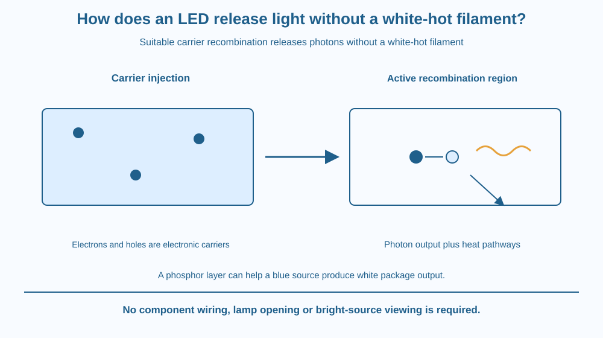

Explain electroluminescence in an LED using electron-hole recombination. Distinguish photon emission from heating a filament until it glows. Connect semiconductor energy differences with emitted light and recognise how a white-light package can differ from a single coloured junction.
An LED can emit visible light without a wire becoming white hot. It still receives electrical energy and can warm during operation, but its main light-production mechanism is different from a glowing filament.
Inside a suitable semiconductor junction, electrons and holes are brought into conditions where recombination can release energy as photons. The material's energy structure influences the light produced.
The useful question is how electrical input becomes a light-emission event, not whether the package looks bright or whether every semiconductor behaves like a miniature lamp.
An LED, or light-emitting diode, uses a semiconductor structure designed to emit light under appropriate electrical operation. A simple model includes p-type and n-type regions and their junction.
An electron is a negative charge carrier. A hole represents a missing electron state that behaves as a positive carrier within the material description. It is not a tiny empty bubble filled with air.
Under suitable forward bias, carriers are supplied to the active region. When an electron and a hole recombine, the electronic system moves to a lower-energy arrangement. In an efficient radiative event, the difference leaves as a photon.
The semiconductor's band-gap properties influence photon energy. Higher-energy visible photons correspond to shorter wavelengths. Different material systems can therefore support different colours rather than one identical LED colour for every diode.
Not all semiconductors emit efficiently through the same process. Material structure and competing pathways affect whether energy becomes light or heat. An ordinary silicon diode is not automatically a useful visible LED just because it has a junction.
A white LED package often combines a blue-emitting source with phosphor materials that absorb some light and emit a broader set of wavelengths. Other white-light systems can mix multiple coloured sources. White output need not mean one junction directly emits every visible wavelength equally.
Real LEDs are not perfectly efficient. Some input becomes heat, and temperature management influences performance and lifetime. The absence of a white-hot filament does not mean the device has no thermal losses.
Operating conditions and current control matter. This lesson supplies no wiring arrangement or safe current for a particular component. We use paper models rather than connecting batteries, dismantling lamps or looking closely into intense light sources.
Draw two carrier populations approaching an active region. Replace one electron-hole pair with an emitted photon symbol and a lower-energy state in the account. Keep energy input visible so the light is not created without a source.
Add a competing heat route for some events. This prevents the ideal recombination picture from becoming a claim of perfect conversion.
Then place a phosphor layer outside a blue-source symbol. Split the output into remaining blue and converted longer-wavelength components. The model distinguishes the junction's primary emission from the package's final colour, which is a more complete explanation of a common white lamp.
The SVG shows p- and n-type regions feeding carriers into an active recombination zone. A photon arrow leaves that zone, while a separate heat arrow represents non-light output.
A lower inset adds a phosphor-conversion layer to a blue source and labels the combined white-light output qualitatively. No wavelength or efficiency statistics are assigned.
The graphic is not a circuit diagram or a practical assembly guide. Its caption distinguishes electroluminescence from incandescence and notes that semiconductor choice and operating conditions determine whether the model produces useful light.

LED lighting is common in Indian homes, schools and public displays. The visible package can hide several components, including the emitting chip, conversion materials, electrical control and thermal structure.
A product labelled LED therefore is not only a bare junction. Its final light quality and operating behaviour depend on the whole design. This lesson makes no current product recommendation, price comparison or promised efficiency saving.
Do not open a lamp, remove a driver or test a loose component with an unknown supply. The mechanism can be understood without touching a wall socket, soldering or risking eye exposure to a bright source.
Use paper and three colours for carriers, photons and heat.
Keep the hole label explicit so it is not mistaken for a physical air pocket. Symbol counts are conceptual, not measured quantum efficiency. No actual LED or power supply is required.
Why can a device emit light without being white hot and still need thermal management? Separate the useful radiative route from other energy losses.
Now compare a blue chip with a finished white package. Which additional stage can change the output spectrum? A correct explanation should not assign every visible property of the final lamp directly to the bare junction alone.
What is a hole in the semiconductor model?
Answer: B — A hole is part of the electronic carrier description rather than an empty air cavity.
Why can suitable electron-hole recombination emit light?
Answer: A — Radiative recombination releases electronic energy as a photon.
A blue chip is used in a white-light package. What can contribute to the final output?
Answer: C — A conversion layer can combine longer-wavelength light with the remaining blue output.
Create a two-level LED explanation: the carrier recombination event and the whole white-light package. Include electrical input, photon output, heat and an optional phosphor layer.
Add one limitation about material or operating conditions. Your work must not claim all semiconductors are efficient visible emitters or provide an improvised battery connection. The target is energy conversion, not a home electronics build.
The colour leaving a lamp can be the result of more than one light-conversion stage. A blue source plus a converting material can contribute to white output. Looking only at the final colour would miss the internal sequence, just as calling every bright object hot would miss electroluminescence itself.
An LED emits photons through suitable carrier recombination rather than a white-hot filament; material choice, conversion layers and heat losses shape the final output.